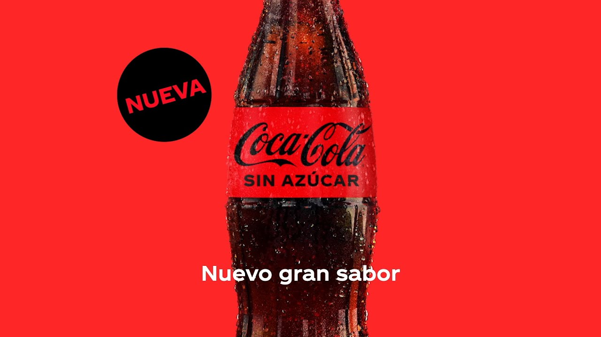
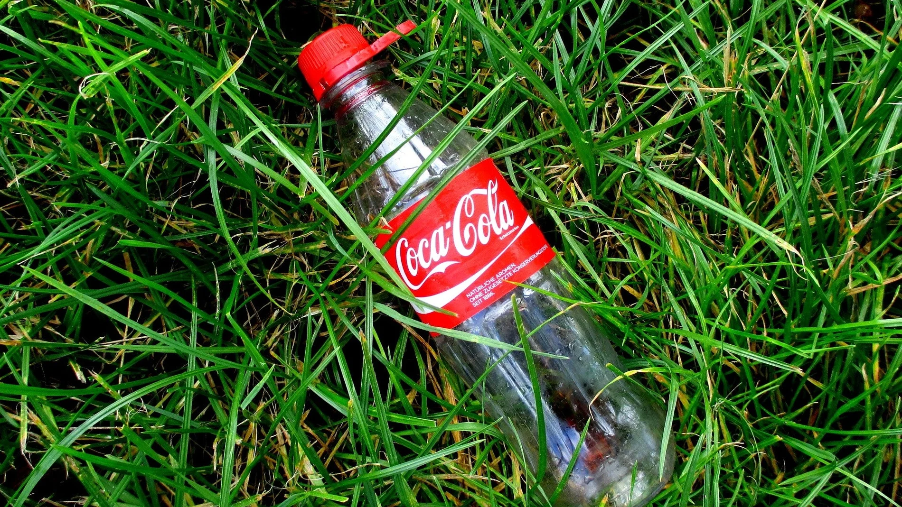
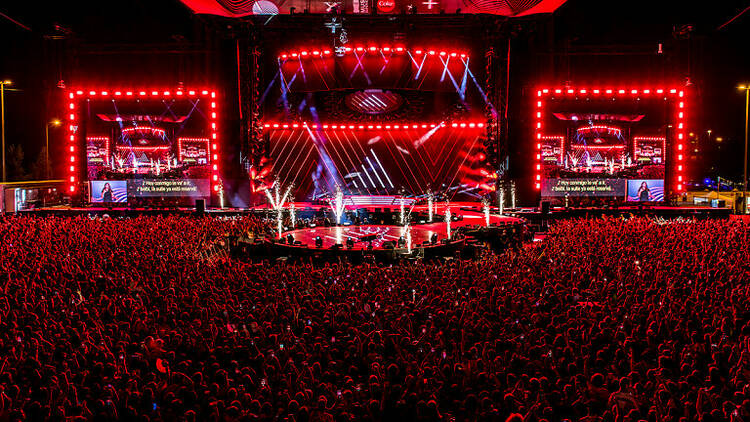

Lanzamiento de la Nueva Coca-Cola Sin Azúcar
Coca-Cola ha lanzado su nueva variante "Coca-Cola Sin Azúcar", que ofrece el mismo sabor de la bebida original pero sin calorías. Esta opción está diseñada para satisfacer la creciente demanda de alternativas más saludables entre los consumidores. La campaña de lanzamiento incluirá una serie de anuncios en redes sociales y en medios tradicionales.

Coca-Cola se Compromete a la Sostenibilidad
En un esfuerzo por reducir su huella de carbono, Coca-Cola anunció hoy un ambicioso plan para ser completamente sostenible para 2030. Esto incluye el uso de botellas 100% recicladas y la inversión en tecnologías de producción de bajo carbono. La empresa busca involucrar a sus consumidores en esta iniciativa a través de campañas educativas.

Coca-Cola Patrocina el Festival de Música Internacional
Coca-Cola se ha asociado con el Festival de Música Internacional para promover la diversidad y la inclusión en la música. Este evento, que se llevará a cabo en varias ciudades, contará con artistas de todo el mundo y ofrecerá a los asistentes la oportunidad de disfrutar de diversas culturas a través de la música. Se espera que la participación de Coca-Cola eleve la experiencia del festival.
